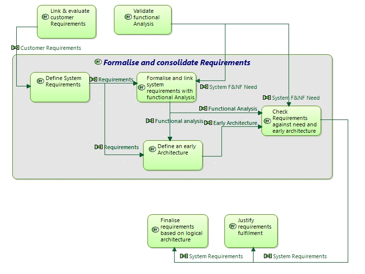

Formalise and consolidate Requirements
Engineering activity
Engineering activities > Engineering Activities & Perspectives > ANALYSE NEEDS & CONTEXT > Perform SYSTEM NEED ANALYSIS > Formalise and consolidate Requirements
Define system/SW requirements
Define Requirements to implement the former functions, data exchanges, non-functional constraints… and complement customer-originated requirements.
Maintain bi-directional traceability between Requirements and system/SW Need functions, data flows, interfaces, scenarios…
When Reuse is expected, compare and map requirements with existing components to be reused.
Define an early architecture
Build an early architectural View of the System/SW, based on previous capability engineering choices & results,
-
Focusing on main constraints impacting design & IVVQ (performance, critical parts, dynamic behaviour, real-time issues, system modes & states, development & ownership cost… and reuse of existing assets);
Note: restrict early architecture to most significant and risky aspects and parts of the system/SW - Allocating system/SW Need functions, data flows …to components of this architecture
- Dealing with first non-functional requirements (Quality of Service, industrial constraints, subcontracting, modularity, Product Line approach, design to cost…)
- In conformity with operational Need.
The approach to build this early architecture is the same as logical/physical architecture design described later in this document, and should not be restricted to a functional breakdown.
Check (internal) Requirements against early architecture and need analysis.
This should at least lead to evaluate, for each requirement:
-
the importance of its contribution to operational need
by following links from requirement to functions implementing it, then links from functions towards operational activities -
its feasibility (against early architecture; see above)
by following links from requirement to functions implementing it, then from functions to components of architecture,
and consideration of non-functional constraints and viewpoints - its qualitative cost range (through complexity to map on architecture, integration issues, complexity of validation scenarios, of preselected technologies when significant…).
When a particular requirement is not achievable (cost, feasability, …), return to the initial operational need in order to see if the requirement can be relaxed.
Note that requirements analysis may lead to modify/improve early architecture; on the other side, requirements refinement should stop when not relevant to (not impacting) early architecture.
Input:
- System/SW functional & non-functional analysis outputs
- Customer requirements
Output:
- System Requirements formalizing System definition,
- Consolidated early Architecture
- Allocation of System functions to architecture components
- Traceability links between requirements, system functional/non-functional analysis and early architecture
Target document:
- System/Segment Specification (SSS)
Verification and Consistency checks:
External consistency:
- Between System requirements and User Requirements
- Between system requirements and functional/non-functional analysis
Internal consistency:
- Between system requirements and early architecture
- Verify the Requirements Description: coherent, complete, relevant: no contradiction, no gap, no inaccuracy.
Details of Outputs Contents
Details of Inputs Contents
Related Diagrams
3Formalise and consolidate Requirements Context

This figure describes the interactions of the considered task with other engineering activities.
Diagrams displaying "Formalise and consolidate Requirements"
- 4 - Need Analysis Team Work
- 5 - Models Management
- 4 - Sub-contractor Work
- 4 - Data & Interface Manager Work
- 5 - Document Building
- 3-Formalise and consolidate Requirements - Context
- 4 - Chief Architect Work
- 1 - First Level Tasks of Architecture Definition Perspectives
- 4 - Customer Work
- 4 - IVVQ Manager Work
- 4 - Non functional Specialty Engineering Work
- 2-Perform SYSTEM NEED ANALYSIS - Contents
- 4 - Product Line & Configuration Managers Work